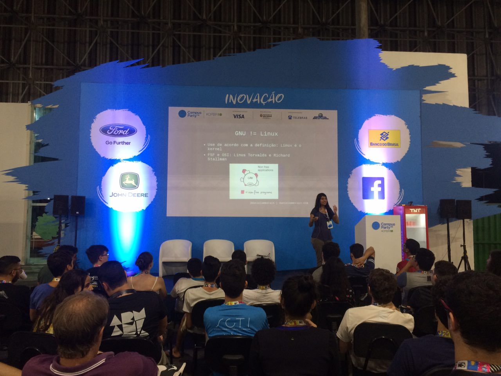

GNU Linux para noobs
Aprenda o essencial para quem está dando os primeiros passos em GNU/Linux. Um guia básico sobre o uso de GNU/Linux e por quê tão essencial usá-lo e saber como funciona.
https://danielammorais.com/gnu-linux-para-noobs.pdf
Desenvolvimento de Software para Startups
Um dos principais desafios para startups é o time to market para entregar valor ao cliente porém muitas vezes a alta complexidade do software nos impede de ser ágil. Aprenda dicas de como arquitetar o seu sistema de modo ágil e lidar com código legado.
https://danielammorais.com/desenvolvimento-e-arquitetura-de-software.pdf
APIs Python para IoT
A popularização de hardwares de prototipagem proporcionou o boom dos dispositivos IoT e com estes cada vez mais conectados é importante entender sobre seus protocolos, desafios de limitação de banda e energia e como torná-los seguros com OAuth.
Programação Funcional em Java
Os recursos de programação funcional estão disponíveis desde Java 8 e as novas versões de Java estão aprimorando cada vez mais as APIs de Streams. É essencial que desenvolvedores Java estejam habituados com a sintaxe e saibam escrever códigos mais limpos utilizando os recursos de programação funcional. Nessa talk serão introduzidos conceitos básicos de Programação Funcional e por quê tão importante, como reescrever alguns trechos de código e os recursos que Java oferece como: streams, filters, map/reduce, takeWhile/dropWhile etc.
Dicas de código limpo
Testes em Java
Injeções de dependências com Spring
Guia básico de Git
O que é essa tal de arquitetura de software e back-end?
Spring e o futuro de Java
Spring 5 foi lançado recentemente e agitou a comunidade Java, é um dos frameworks mais utilizados e que você deve conhecer! Aprenda a criar o seu pprimeiro projeto com Spring Boot e o básico para desenvolver os seus microservices.
Outras
- Oficina de PGP
- O que é Software Livre e por quê tão legal
talks em 2018
- The Developers Conference
- Java São Paulo Meetup
- SouJava Campinas
- Devs JavaGirl
- GDG Salvador
- BackEnd Brasil
talks em 2017
- campus party
- cryptorave
- The Developers Conference
- Arduino Day
- Pyladies Meetup
- Semana da Informática do Cotil
- Semana da Computação da UNESP Rio Claro
- Semana da Computação da UNICAMP
- Hackathon Hack The Campus
